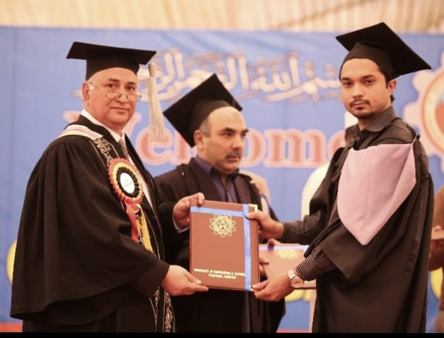
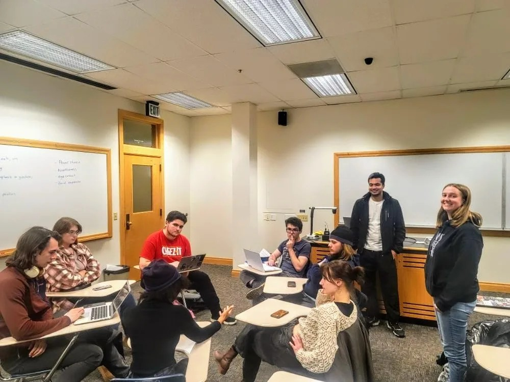

I am a Ph.D. candidate in Computer Science at Utah State University where I explore how human-centered
AI can support equitable learning pathways. My research blends machine learning, learning sciences,
and interaction design to interpret the telemetry students generate as they program and to surface
insights that instructors can act on.
At the Data Science and Applications Lab, I collaborate with faculty, practitioners, and community
partners to translate models into trustworthy tools—from predictive feedback for computer science
courses to analytics that inform energy and environmental decision-making.
Current Appointment
Graduate Research & Teaching Assistant, Data Science and Applications Lab, Utah State
University (Advisor: Prof. Hamid Karimi).
Focus Areas
Learning analytics and keystroke-based modeling of programming behavior.
Responsible and fair AI systems that surface actionable insights.
Data storytelling for STEM education and community partners.
Previously
Research Associate at Pakistan's National Center of Artificial Intelligence and Project
Engineer at USPCAS-E, delivering remote sensing and predictive maintenance solutions for
industry and government stakeholders.
Research
Human-centered AI that supports real learning progress
Learning Analytics & Instrumentation
Designing multimodal data capture—keystrokes, IDE telemetry, and formative assessments—to map
learning trajectories and deliver timely support in computer science courses.
Keystroke modeling
Adaptive feedback loops
CS1 analytics
Responsible & Fair AI
Building evaluation frameworks that elevate individual-level fairness considerations and align
predictive models with institutional goals and student well-being.
PCIndFair framework
Model interpretability
Ethical deployment
Applied ML for Earth & Energy Systems
Combining remote sensing, classical ML, and deep learning to monitor natural resources, map
industrial activity, and improve renewable energy operations.
Google Earth Engine
Segmentation & detection
Operational analytics
Projects
Tools and studies shaping equitable learning experiences
CodeClimberAI Exercise Generator
Full-stack intelligent tutoring system delivering 11,700 curated Python exercises across
five modalities with keystroke analytics, OAuth authentication, and a MySQL-backed
progress history.
A novel framework that diagnoses and mitigates individual fairness violations in
probabilistic classifiers, offering interpretable dashboards for decision makers.
Interpretable keystroke features and ensemble strategies that achieve 80% accuracy in
predicting CS1 student performance while providing actionable feedback for instructors.
Machine learning workflows in Google Earth Engine that fuse multispectral imagery and
feature-oriented PCA to map industrial rock deposits for sustainable mining.
A reverse chronological snapshot of my scholarship. For the full record, download my CV or visit my
Google Scholar profile.
Latest
Human Evaluation of GPT for Scalable Python Programming Exercise Generation
M.F.A. Khan, M. Ramsdell, H. Nguyen, H. Karimi · IEEE
International Conference on Data Science and Advanced Analytics (DSAA) 2024 ·
Oct 2024 · pp. 1–10
Paper
Benchmarks GPT-4 Turbo for curriculum-aligned Python exercise generation, producing
11,700 CS1 problems and studying student and instructor feedback on quality and effort
to scale intelligent tutoring systems.
Assessing the Promise and Pitfalls of ChatGPT for Automated Code Generation
M.F.A. Khan, M. Ramsdell, E. Falor, H. Karimi · 17th
International Conference on Educational Data Mining (EDM) 2024 · Jul 2024 ·
pp. 83–95
PaperCode & data
Contrasts ChatGPT and human developers across 131 programming prompts using 14 code
quality metrics, highlighting strengths in data analysis tasks and revealing gaps in
visual reasoning scenarios.
Student-perceived Cognitive Load of LLM-generated Programming Exercises
M.F.A. Khan, L.E. Feri, H. Nguyen, H. Karimi ·
Accepted for the 12th IEEE International Conference on Data Science and Advanced
Analytics (DSAA) 2025
Measures how CS1 students experience GPT-generated exercises using keystroke telemetry,
code metrics, and survey data, providing actionable guidance for balancing difficulty
and scaffolded AI feedback.
Human Evaluation of GPT for Scalable Python Programming Exercise Generation
M.F.A. Khan, M. Ramsdell, H. Nguyen, H. Karimi · IEEE
DSAA 2024 · Oct 2024
Paper
Assessing the Promise and Pitfalls of ChatGPT for Automated Code Generation
M.F.A. Khan, M. Ramsdell, E. Falor, H. Karimi · EDM 2024
· Jul 2024
PaperCode & data
Student-perceived Cognitive Load of LLM-generated Programming Exercises
M.F.A. Khan, L.E. Feri, H. Nguyen, H. Karimi · DSAA 2025
Deciphering Student Coding Behavior: Interpretable Keystroke Features and Ensemble
Strategies for Grade Prediction
M.F.A. Khan, J. Edwards, P. Bodily, H. Karimi · IEEE
International Conference on Machine Learning and Applications (ICMLA) 2022
PaperCode
Enhancing the Performance of Automated Grade Prediction in MOOC Using Graph Representation
Learning
S. Farokhi, A. Yaramal, J. Huang, M.F.A. Khan, X. Qi, H. Karimi
· IEEE International Conference on Big Data (BigData) 2023
Paper
AI in Fairness
A New Framework to Assess the Individual Fairness of Probabilistic Classifiers
M.F.A. Khan, H. Karimi · IEEE International Conference
on Machine Learning and Applications (ICMLA) 2022
PaperProject
Introduces PCIndFair, a diagnostic toolkit that spotlights individuals at risk of unfair
outcomes and guides mitigation strategies.
Enhancing Individual Fairness Through Propensity Score Matching
H. Karimi, M.F.A. Khan, H. Liu, T. Derr, H. Liu · IEEE
International Conference on Data Science and Advanced Analytics (DSAA) 2022
Paper
Aligns causal inference techniques with machine learning pipelines to reduce individual
unfairness in predictive systems.
Remote Sensing
Lithological Mapping of Kohat Basin in Pakistan Using Multispectral Remote Sensing Data
F. Elahi, K. Muhammad, S.D. Din, M.F.A. Khan, S. Bashir, M.
Hanif · Applied Sciences 12(23), 12147 (2022)
Article
A Fusion of Feature-oriented Principal Components of Multispectral Data to Map Granite
S.U. Din, K. Muhammad, M.F.A. Khan, S. Bashir, M. Sajid, A.
Khan · Applied Sciences 11(23), 11486 (2021)
Article
Mapping Alochemical Limestone Formations in Hazara, Pakistan Using Google Cloud Architecture
M.F.A. Khan, K. Muhammad, S. Bashir, S. Uddin, M. Hanif ·
ISPRS International Journal of Geo-Information 10(2), 58 (2021)
Article
Other
An Analysis of the Dynamics of Ties on Twitter
K. Kheiri, M.F.A. Khan, T. Derr, H. Karimi · IEEE
International Conference on Big Data (BigData) 2023
Paper
Longitudinal study of 120K Twitter users exploring how structural, content, and behavioral
signals forecast tie dissolution at scale.
Teaching & Service
Building supportive learning experiences
Utah State University · Graduate TA
2021 — Present
Facilitated labs and recitations for introductory programming and analytics courses,
supporting 100+ students each semester.
Designed interactive modules and data-driven feedback loops inside Canvas and custom
learning tools.
Coordinated grading, mentoring, and onboarding for undergraduate research assistants.
Mentorship & Outreach
Mentor undergraduate researchers on keystroke analytics, fairness in AI, and data
storytelling projects.
Organize workshops on ethical AI practices and data literacy for local educators and
community partners.
Volunteer judge and coach for regional hackathons and STEM education events.
Industry & Research Leadership
Led ML projects at Pakistan's National Center of AI focused on geospatial intelligence and
industrial analytics.
Developed predictive maintenance pipelines for aircraft hydraulics and wind energy assets
at USPCAS-E.
My Life
Moments beyond research
A peek at the places, people, and events that keep me inspired outside the lab.
Enojoying a sunset with friends after classes.Celebrating commencement with classmates who turned late-night study sessions
into lasting friendships.

Undergraduate graduation, a proud moment shared with faculty who championed my research curiosity early
on.Welcoming new Aggies at international banquet with the International Student Council.Cheerful walks with classmates after classes.Film club adventures in Salt Lake City—capturing stories on and off camera.Presenting research at ICMLA 2022 and discussing ideas.Premiere night with the film club—our favorite way to learn from directors we admire.

Brainstorming sessiong at the Filmmaking ClubFilmmaking Club Marketing, recruiting storytellers at the USU club fair—inspiring students to explore filmmakingScript-writing and scene planning sessions with the Filmmaking gang.
together.Geeking out over space tech during a NASA outreach event—dreaming about AI beyond Earth.A snow-day selfie every day needs a little adventure with good company.Late nights at the lab, immersed in remote sensing data that sparked my research journey.
Contact
Let’s collaborate
I’m always open to new research collaborations, invited talks, and partnerships that align
AI innovation with meaningful learning outcomes.